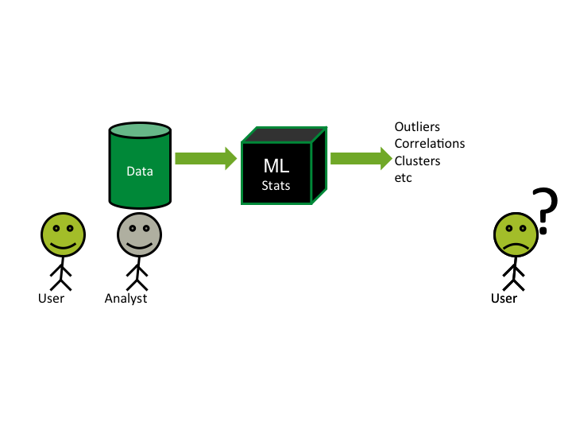
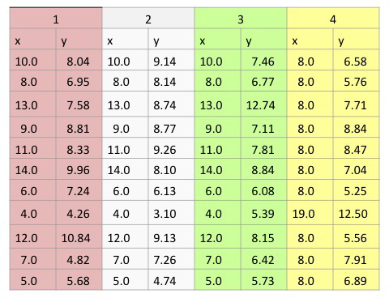
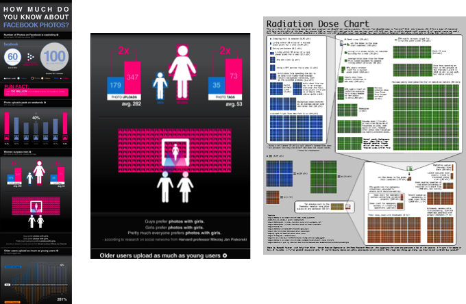

Intro to InfoVis using d3.js
Outline
- What is Infovis?
- How D3 Works
- Types of data
- Hands-On
Data
- Health records
- Financial transactions
- Facebook Social Graph
- Tweets
- Wikipedia edits
Data (II)
- We know how to:
- Store it (big table, NoSql, etc)
- Process it (map-reduce, parallel computing)
- But how to make sense of it?
How to make sense of data?
Data Mining/Machine Learning

Information Visualization

Infovis + Algorithms

Traditional
Pros:
Cons:
|
Data Mining/ML
Pros:
Cons:
|
InfoVis
Pros:
Cons
|
Why should we visualize?
Anscombe's quartet
Anscombe's quartet

Anscombe's visualized

In Infovis we look for insights
- Deep understanding
- Meaningful
- Non obvious
- Actionable
Types of Visualization
- Infographics
- Scientific Visualization (sciviz)
- Information Visualization (infovis, datavis)
Infographics
Scientific Visualization
- Inherently spatial
- 2D and 3D

Information Visualization

Visualization Mantra
- Overview first
- Zoom and Filter
- Details on Demand
Perception Preference

Taken from:Tamara Munzner Book Chapter
Data Types
| 1-D Linear | Document Lens, SeeSoft, Info Mural |
| 2-D Map | GIS, ArcView, PageMaker, Medical imagery |
| 3-D World | CAD, Medical, Molecules, Architecture |
| Multi-Var | Spotfire, Tableau, GGobi, TableLens, ParCoords, |
| Temporal | LifeLines, TimeSearcher, Palantir, DataMontage, LifeFlow |
| Tree | Cone/Cam/Hyperbolic, SpaceTree, Treemap, Treeversity |
| Network | Gephi, NodeXL, Sigmajs |
Hands-On Tutorial
Follow tutorial here https://goo.gl/KZTCsGStep 1: Selections
d3.select("#chart1")
.append("p")
.text("hola mundo");
d3.selectAll("p")
.style("font-size", "23pt");